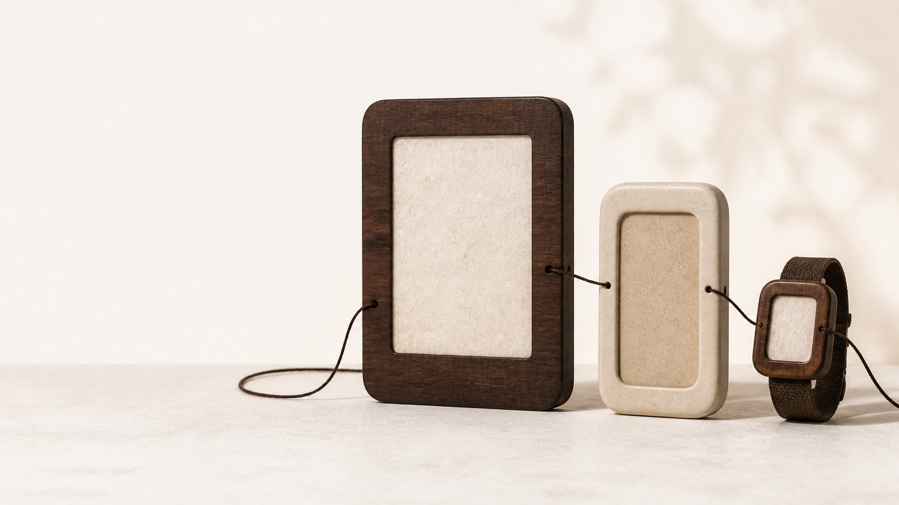
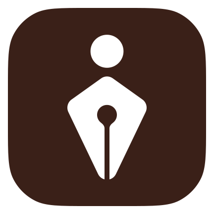

One-second message
Tiro에 팀용 워크스페이스가 생겼다
이미지보다 먼저 고정할 단 한 문장입니다. 제목과 장면이 이 문장을 증명하지 못하면 시각 작업을 시작하지 않습니다.
Tiro marketing visuals · Final asset review
보고서 모드는 body의 data-report-mode를 message-brief, comparison-board, final-asset-review 중 하나로 바꿉니다. 실제 작업에서는 확인된 메시지와 근거로 예시 내용을 교체합니다.
One-second message
이미지보다 먼저 고정할 단 한 문장입니다. 제목과 장면이 이 문장을 증명하지 못하면 시각 작업을 시작하지 않습니다.
Decision frame
출처가 있는 제품·회사·인증 사실만 기록합니다.
기능 변화, 인증 증거, 지원 대상처럼 무엇이 앞에 와야 하는지 정합니다.
재사용, 재조합, 신규 생성 중 가장 작은 유효 개입을 선택합니다.
Comparison board
후보는 실제 카피와 근거를 공유합니다. 메시지·증거 구조·이미지와 글자의 관계가 물질적으로 다를 때만 이 candidate 블록을 2–3개로 복제합니다.
Supported target first


지원 대상과 연결 관계를 먼저 읽히게 하는 기준작입니다.
Confirmed composition
사용자가 거의 그대로 써도 된다고 판단한 기준작입니다. 실제 사용 시 지원 범위와 플랫폼 표기는 반드시 현재 사실로 교체·검증합니다.
Optical change log
| Role | Previous | New | Reason |
|---|---|---|---|
| Title | 72px 상당 | 63px 상당 | 영문·한글 혼합 폭과 기기 조형 충돌을 해소 |
Quality gate
| Criterion and observable 10/10 target | Score |
|---|---|
| 1초 이해도 · 지원 대상과 변화가 설명 없이 읽힘 | 9.4 |
| 유형 구분성 · 호환 소식임이 다른 발표와 혼동되지 않음 | 9.6 |
| 타이포 · 한국어 줄바꿈과 이미지 충돌이 없음 | 9.2 |
| 운영 확장성 · 실제 지원 환경과 채널별 재조판이 가능 | 9.4 |
모든 핵심 항목이 9.0 이상일 때만 후보로 공유합니다. 실제 제품 지원 범위·채널 크기·출처 검증은 self-score와 별도의 완료 조건입니다.